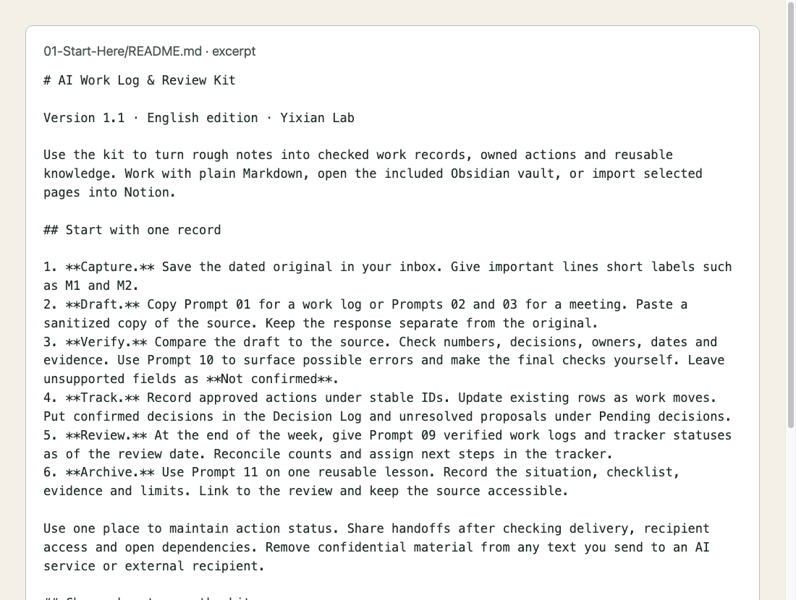
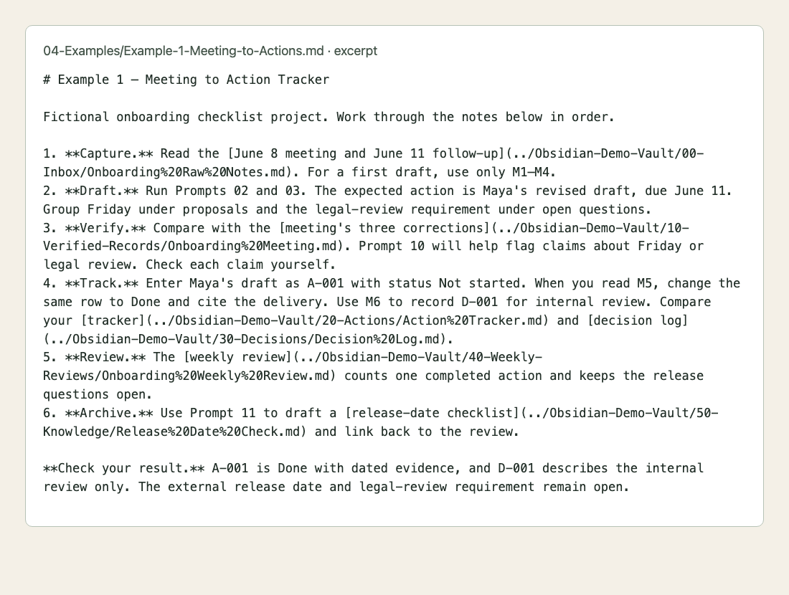

Daily work log
Capture raw notes, then record verified work, blockers, and next actions only when you can stand behind them.
Digital product · Version 1.1
Turn rough notes into checked work records, owned actions, and reusable knowledge. This is a downloadable file kit — not software, not a plugin, and not a subscription.
35 downloadable files · Version 1.1
Buy for US$5Online purchasing is currently unavailable.
Download file AI-Work-Log-and-Review-Kit-v1.1.zip
If your work lives in chats, meetings, and loose notes, this kit gives you a repeatable way to capture the source, draft with optional AI help, verify against the original, keep one action list, and close the week without inventing missing details.
Capture raw notes, then record verified work, blockers, and next actions only when you can stand behind them.
Extract actions, and keep confirmed decisions separate from ideas, proposals, and open questions.
Maintain one running list with stable IDs, and log decisions only when they were actually made.
Reconcile the week from verified records, archive a reusable check, or send a checked client handoff.
Made for adults who use ChatGPT, Notion, Obsidian, or similar tools — including freelancers, independent creators, and anyone who has to keep their own work record. You do not need a paid AI account. AI drafting is optional; review, updates, and archiving are manual steps.
You can work in a Markdown editor, open the included Obsidian demo vault, or import selected files into Notion by following the guide. Notion relations, views, and database templates are set up manually by you. This kit is not a ready-made Notion template pack and does not set up a database automatically.
The official package contains 35 files. Templates are Markdown only — there are no Word or PDF files in this version.
| Folder | What you get |
|---|---|
| 01-Start-Here | English getting-started notes: README.md (your first file after unzipping), Product-Details.md, and Visual-Product-Preview.html, an offline browser walkthrough |
| 02-Templates | Six Markdown templates: Daily Work Log, Meeting Notes, Action Tracker, Decision Log, Weekly Review, and Client Handoff |
| 03-AI-Prompts | Twelve copy-ready prompts in one library file, Prompt-Library.md |
| 04-Examples | Two fictional teaching cases: meeting-to-actions, and weekly review. These are not real client work. |
| 05-License | License-and-Use.md — personal and internal-use terms |
| 06-Notion | Notion-Import-Guide.md and Example-Tasks.csv with three sample task rows |
| Obsidian-Demo-Vault | A demo vault with inbox, verified records, actions, decisions, weekly reviews, knowledge, handoffs, template copies, the prompt library, and Start Here.md. Sample trails cover an onboarding checklist and a client guide project. |
| Root | FILE-LIST.md, plus the folders above |
The 12 prompts
Not included: software, an AI account or API credits, automation, a ready-made Notion template pack, automatic database setup, transcription, chat or calendar integrations, or one-on-one consulting. Results depend on how you use the files. The two example cases are fictional teaching material, not real client records.
01-Start-Here/README.md. That is the buyer entry point.Obsidian-Demo-Vault folder as a vault, then read Start Here.md); or import selected files into Notion using 06-Notion/Notion-Import-Guide.md.Notion relations, views, and database templates are configured by you. AI drafting, review, updates, and archiving are manual steps. You can also open Visual-Product-Preview.html in a browser for an offline walkthrough of the workflow.
These images are from the official v1.1 package. They show Markdown files and the included offline walkthrough — not Word or PDF files, and not a mockup of checkout.

01-Start-Here/README.md from the official ZIP


Visual-Product-Preview.htmlFor a longer public walkthrough that does not include the full paid package, see the public usage sample.
Policy: Refund and Digital Delivery Policy · Privacy policy · Terms of service · 中文退款政策 · 中文隐私政策 · 中文服务条款
No. You receive editable files: six Markdown templates, one prompt library, two fictional examples, an Obsidian demo vault, a Notion import guide with a three-row sample CSV, English getting-started notes, an offline HTML walkthrough, a license, and a file list. No Word or PDF files are included. You can use tools you already have, but no AI account, API credits, automation, or software license is included.
No. The prompts are optional and can be used with most chat-based AI tools, including free tiers. You can also fill in the templates by hand. You are responsible for verifying all AI output.
Yes, with the limits stated in the kit. You can open the included Obsidian demo vault as a folder. For Notion, import selected Markdown files and, if you want a practice Tasks database, the sample CSV. Relations, views, and database templates are set up manually. Tables may need touch-up after import. The kit does not include a preconfigured Notion template or automatic sync.
When checkout is enabled, the planned delivery method is Dodo Payments official Digital Files: a confirmation email with download links, and access to the same files in the customer portal if an earlier link expires. According to Dodo documentation, each download link expires 15 minutes after it is generated.